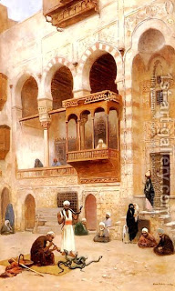

Chulin 10 - A Nick Was Found on a Knife
Due to prevalence of poisonous snakes in Babylon, if a liquid - water, wine and milk - is left uncovered, one should not drink it, because a snake might have drunk from it. Because of mystical reasons, some people observe this law even nowadays.
If the knife was not inspected immediately after slaughter, but only some time afterward, and a nick was found on it, then Rav Huna declares the slaughter invalid. This is true even if the butcher was later smashing bones with the knife later in the day, and it is likely that the nick originated then. Rav Huna is consistent with his own opinion that an animal is considered forbidden for consumption unless for know with certainly how it was slaughtered.
Rav Chisda, however, declares the meat kosher. What is his logic? The nick may have been caused by the animal's hide or by a bone. The hide is unlikely to cause the nick, while the bone is likely to do so. Weighing unlikely against the likely, we say that the nick was caused by a bone later on, and the slaughter was done with a good knife and is therefore valid.
Art: Frans Wilhelm Odelmark - The Snake Charmer